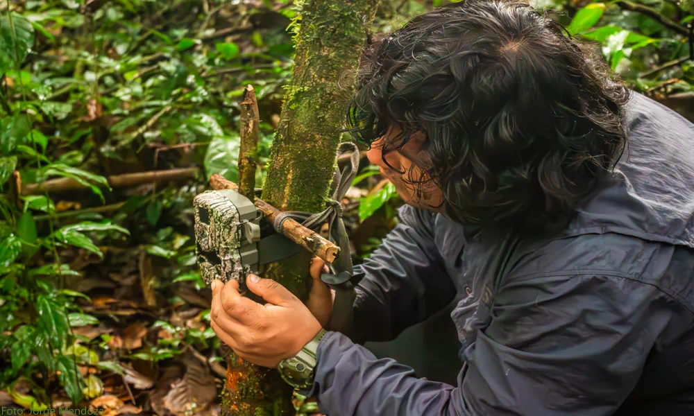
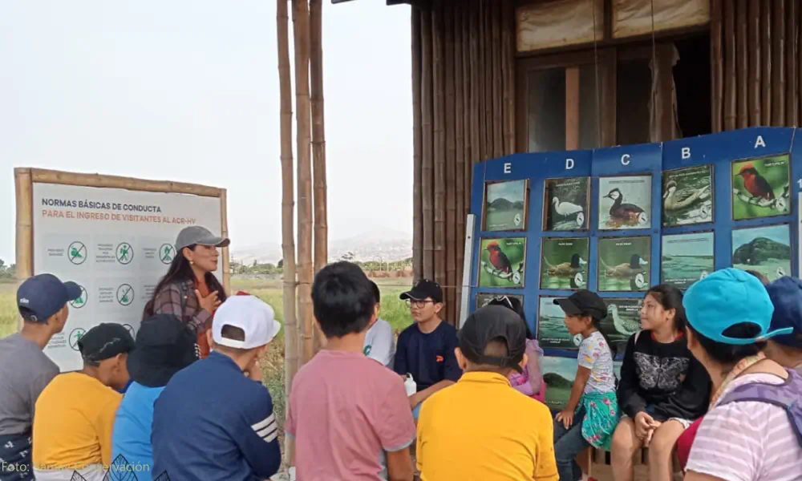

Quiénes somos
Samay Conservación es una organización sin fines de lucro que promueve la conservación del medio ambiente en el Perú a través de la investigación científica, la educación y el arte como herramientas de transformación social.
Nuestro trabajo busca proteger la biodiversidad, fortalecer capacidades locales y contribuir al desarrollo sostenible mediante un enfoque interdisciplinario que integra ciencia, creatividad y participación comunitaria.

Nuestra Misión
Generar y aplicar conocimiento científico para la conservación del medio ambiente en el Perú, desarrollando proyectos de investigación, educación ambiental y acción comunitaria orientados a la protección de la biodiversidad y al uso sostenible de los recursos naturales.
Promovemos un enfoque interdisciplinario que integra ciencia, educación y arte como herramientas complementarias para sensibilizar, comunicar y transformar. Buscamos construir puentes entre investigadores, artistas, comunidades y tomadores de decisión, fortaleciendo capacidades técnicas y fomentando una cultura ambiental basada en evidencia, creatividad y participación.

Nuestra Visión
Ser una organización referente en el Perú y Latinoamérica en conservación basada en evidencia científica, compromiso comunitario y expresión artística como medio de transformación social.
Aspiramos a consolidar un equipo interdisciplinario de profesionales y colaboradores que integren distintas áreas del conocimiento para generar impacto real en la protección de la biodiversidad, contribuyendo al desarrollo sostenible y a la mejora de la calidad de vida de las comunidades locales.
Información Institucional
ID Registro: 70779727
Dirección: Prov. Const. del Callao - Ventanilla, Perú
Correo institucional: info@samayconservacion.org